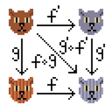

Either, like Option is a monadic container that can hold one of two things.
Option has only one generic type: Some
Either has two generic types: left/incorrect and right/correct.
trait Either[+E,+A] //base trait
case class Left[+E](e: E) extends Either[E, Nothing]
case class Right[+A](a: A) extends Either[Nothing, A]
The left side of Either is typically an Exception of some form, and is usually intended to be the "end of the chain."
A Left instance of Either will have Nothing for its "right" type.
A Right instance of Either will have Nothing for its "left" type.
The generic letter for the "left" type is "E" because it is usually a subtype of Java's Exception.
trait Either[+E,+A] {
def map[B](f: A => B): Either[E, B] =
this match {
case Left(e) => Left(e)
case Right(a) => Right(f(a))
}
def flatMap[EE >: E, B](f: A => Either[EE, B]): Either[EE, B] =
this match {
case Left(e) => Left(e)
case Right(a) => f(a)
}
}
In chapter 4 of FPS, the authors note the necessity of the lower type bound generic B in the getOrElse and orElse combinators.
trait Option[+A] {
def getOrElse[B >: A](default: => B): B
def orElse[B >: A](ob: => Option[B]): Option[B]
}
B >: A is a lower type bound;
Generic B can be a supertype of A, or an equal type to A.
It is likely you will use upper type bounds more frequently.
An instance of Some[A] is an Option[A].
The instance of None is an Option[Nothing].
case class Some[+A](get: A) extends Option[A]
case object None extends Option[Nothing]
Nothing is at the bottom of Scala's type hierarchy, i.e. Nothing <: A for all types A.
Since Option is covariant, an Option[Nothing] can be an Option[A] for all types A.
Given
val failed: Option[Nothing] = None
if not for the lower type bound generic B >: A, getOrElse would be limited to this signature when called on failed:
getOrElse(default: => Nothing): Nothing
With B >: A, getOrElse on failed becomes:
getOrElse[B >: Nothing](default: => B): B
The same explanation of the necessity of the lower type bound generic holds for Either.
If not for the lower type bound generic EE, flatMap would be limited to this signature when called on an instance of Left:
flatMap[B](f: A => Either[Nothing, B]): Either[Nothing, B]
Why would you need to call flatMap on an instance of Left?
Because at run-time your Either may not be a Right as you expected; it may be a Left.
But at compile-time, the combinators must type-check for either way this could go.
Cats provides an alternative to the Scala standard library's Either in cats.data.Xor.
Why have this?
The main reason is that Either is unbiased.
This means we must first use projection (.left or .right) to access flatMap, map, etc.:
Right(123).flatMap(x => Right(x * 2))
//error: value flatMap is not a member of scala.util.Right[Nothing,Int]
Right(123).right.flatMap(x => Right(x * 2))
//res0: scala.util.Either[Nothing,Int] = Right(246)
This makes Either inconvenient to use as a monad, especially as the convention in most functional languages is that the left side represents errors.
Xor complies with convention and thus supports map and flatMap directly:
import cats.data.Xor
val a = Xor.Right(1)
//a: cats.data.Xor.Right[Int] = Right(1)
a.flatMap(x => Xor.Right(x + 2))
//res1: cats.data.Xor[Nothing,Int] = Right(3)
The Xor object provides the Xor.left and Xor.right constructors as we saw above, as well as smart constructors via the type class syntax pattern:
import cats.syntax.xor._
val a = 3.right[String]
//a: cats.data.Xor[String,Int] = Right(3)
val b = 4.right[String]
//b: cats.data.Xor[String,Int] = Right(4)
for {
x <- a
y <- b
} yield x*x + y*y
//res2: cats.data.Xor[String,Int] = Right(25)
Xor also supports familiar additional methods like getOrElse, and orElse.
We can use getOrElse to extract the right value or return a default:
1.right[String].getOrElse(0)
//res4: Int = 1
"Error".left[Int].getOrElse(0)
//res5: Int = 0
Like Either, Xor is typically used to implement fail-fast error handling.
We sequence a number of computations using flatMap, and if one fails the remaining computations are not run:
for {
a <- 1.right[String]
b <- 0.right[String]
c <- if(b == 0) "DIV0".left[Int] else (a / b).right[String]
} yield c * 100
//res6: cats.data.Xor[String,Int] = Left(DIV0)
When using Xor for error handling, we need to determine what type we want to use to represent errors. We could use Throwable for this as follows:
type Result[A] = Xor[Throwable, A]
//infix notation
type Result[A] = Throwable Xor A
This gives us similar semantics to Try from the Scala standard library.
The problem, however, is that Throwable is an extremely broad supertype, and we have little insight into what type of error occurred.
Another approach is to define an algebraic data type to represent the types of error that can occur.
case class User(username: String, password: String)
sealed trait LoginError
case class UserNotFound(username: String) extends LoginError
case class PasswordIncorrect(username: String) extends LoginError
trait UnexpectedError extends LoginError
type LoginResult = LoginError Xor User
This approach solves the problems we saw with Throwable.
It gives us a fixed set of expected error types and a catch-all for anything else that we didn’t expect.
Now we get precise type checking on any pattern matching:
def handleError(error: LoginError): Unit = error match {
case UserNotFound(u) => println(s"User not found: $u")
case PasswordIncorrect(u) => println(s"Password: $u")
case _ : UnexpectedError => println(s"Unexpected error")
}
User("cem3394", "passw0rd").right
//res0: Xor[Nothing,User] = Right(User(cem3394,passw0rd))
UserNotFound("cem3394").left
//res1: Xor[UserNotFound,Nothing] = Left(UserNotFound(cem3394))
Cartesian is a type class that allows us to “tuple” values within a context.
If we have two objects of type F[A] and F[B], a Cartesian[F] allows us to combine them to form an F[(A, B)].
Recall that this was a motivating example when we introduced the type class pattern in lecture 2.
The code below summons a type class instance for Option and uses it to zip two values:
import cats.Cartesian
import cats.instances.option._
Cartesian[Option].product(Some(123), Some("abc"))
//res0: Option[(Int, String)] = Some((123,abc))
Cartesian[Option].product(None, Some("abc"))
//res1: Option[(Nothing, String)] = None
Cartesian[Option].product(Some(123), None)
//res2: Option[(Int, Nothing)] = None
Its type class definition in Cats is:
trait Cartesian[F[_]] {
def product[A, B](fa: F[A], fb: F[B]): F[(A, B)]
}
Note that the parameters fa and fb are independent of one another.
This contrasts with flatMap, in which fb is evaluated using a:
trait FlatMap[F[_]] {
def flatMap[A, B](fa: F[A])(fb: A => F[B]): F[B]
}
We can define our own product for any monad as:
import cats.Monad
import cats.syntax.flatMap._
import cats.syntax.functor._
import scala.language.higherKinds
def product[F[_]: Monad, A, B](fa: F[A], fb: F[B]): F[(A,B)] =
for {
a <- fa
b <- fb
} yield (a, b)
Making this choice makes it easier to reason about uses of product for a specific monad instance—we only have to remember the semantics of flatMap to understand how product will work.
We've seen that we can implement product in terms of the monad operations. Why bother with the Cartesian type class then?
One reason to have the Cartesian type class is to enforce consistent behavior for all monad instances.
Another reason is that product (and in particular the 'tie-fighter' operator |@| we’ll see in lecture 12) is more convenient than writing out the for comprehension.
The most important reason however is that Cartesian is strictly weaker than Monad.
Next we'll look at a type (called an applicative) for which we can define product but not a monad instance.
Recall that Xor is a monad, so its product is implemented in terms of flatMap.
Let's experiment with this for a bit.
import cats.data.Xor
type ErrorOr[A] = List[String] Xor A
val a: ErrorOr[Int] = Xor.right(123)
val b: ErrorOr[String] = Xor.right("abc")
product(a,b)
//res0: ErrorOr[(Int, String)] = Right((123,abc))
However, if we try to combine two failed Xors, only the left-most errors are retained:
val c: ErrorOr[Nothing] = Xor.left(List("Fail 1"))
val d: ErrorOr[Nothing] = Xor.left(List("Fail 2"))
product(c,d)
//res1: ErrorOr[(Nothing, Nothing)] = Left(List(Fail 1))
This is what is meant by 'failing fast'.
However fail-fast semantics aren’t always the best choice.
For example, when validating a web form, we want to accumulate errors for all invalid fields, not just the first one we find.
If we model this with a monad like Xor, we fail fast and lose errors.
def parseInt(str: String): String Xor Int =
Xor.catchOnly[NumberFormatException](str.toInt)
.leftMap(_ => s"Couldn't read $str")
//parseInt: (str: String)cats.data.Xor[String,Int]
The situation is the same with for comprehensions. The code below fails on the first call to parseInt and doesn’t go any further:
for {
a <- parseInt("a")
b <- parseInt("b")
c <- parseInt("c")
} yield (a + b + c)
//res0: Xor[String,Int] = Left(Couldn't read a)
Cats provides another data type called Validated in addition to Xor.
Validated is an example of a non-monadic applicative.
This means Cats can provide an error-accumulating implementation of product for Validated without introducing inconsistent semantics.
Validated has two subtypes, Validated.Valid and Validated.Invalid, that correspond to Xor.Right and Xor.Left.
We can create instances directly using their apply methods:
import cats.data.Validated
val v = Validated.Valid(123)
//v: cats.data.Validated.Valid[Int] = Valid(123)
val i = Validated.Invalid("oops")
//i: cats.data.Validated.Invalid[String] = Invalid(oops)
It is better for type inference to use smart constructors:
import Validated.{valid, invalid}
val v = valid[String, Int](123)
//v: Validated[String,Int] = Valid(123)
val i = invalid[String, Int]("oops")
//i: Validated[String,Int] = Invalid(oops)
And again we can import enriched valid and invalid methods from cats.syntax.validated:
import cats.syntax.validated._
123.valid[String]
//res0: Validated[String,Int] = Valid(123)
"oops".invalid[Int]
//res1: Validated[String,Int] = Invalid(oops)
Unlike the Xor’s monad, which cuts the calculation short, Validated keeps going to report back all failures.
import cats.data.Validated
import cats.syntax.cartesian._
type ErrorOr[A] = Validated[String,A]
val a: ErrorOr[Nothing] = Validated.Invalid("foo")
val b: ErrorOr[Nothing] = Validated.Invalid("bar!")
Cartesian[ErrorOr].product(a,b)
//res0: ErrorOr[(Nothing, Nothing)] = Invalid(foobar!)
Similar to Writer, Validated accumulates errors using a Semigroup (the append part of a Monoid).
This means we can use any Monoid as an error type, including String, List, and Vector, as well as pure semigroups like NonEmptyLists.
import cats.Cartesian
type StringOr[A] = Validated[String, A]
import cats.std.string._
Cartesian[StringOr].product(
Validated.invalid("Hello"),
Validated.invalid(" world")
)
//res0 = Invalid(Hello world)
Lists have a monoid instance as well:
import cats.std.list._
type ListOr[A] = Validated[List[String], A]
Cartesian[ListOr].product(
Validated.invalid(List("Hello")),
Validated.invalid(List("world"))
)
//res1 = Invalid(List(Hello, world))
Note that vectors have a more efficient append operation than lists and should be used instead:
import cats.std.vector._
type VectorOr[A] = Validated[Vector[Int], A]
Cartesian[VectorOr].product(
Validated.invalid(Vector(404)),
Validated.invalid(Vector(500))
)
//res2 = Invalid(Vector(404, 500))
Xor vs Validated
Which is better?
The answer depends on the semantics we’re looking for.
Some points to ponder:
flatMap) is exactly what you need. Perhaps you want fail-fast semantics or the ability use the contents of one container as an argument to the next container.Read Chapter 5 of Functional Programming in Scala.
| Lecture 4a: Either, Xor, and Validated | 1 |
|---|---|
| Either | 2 |
| - | 3 |
| - | 4 |
| - | 5 |
| Lower Type Bounds | 6 |
| - | 7 |
| - | 8 |
| - | 9 |
| - | 10 |
| - | 11 |
| - | 12 |
| - | 13 |
| Xor | 14 |
| - | 15 |
| - | 16 |
| - | 17 |
| - | 18 |
| - | 19 |
| - | 20 |
| - | 21 |
| Example: Login Errors | 22 |
| - | 23 |
| - | 24 |
| Cartesian | 25 |
| Example: Combining Options | 26 |
| - | 27 |
| - | 28 |
| - | 29 |
| - | 30 |
| - | 31 |
| - | 32 |
| Validated | 33 |
| - | 34 |
| - | 35 |
| - | 36 |
| Example: Parsing | 37 |
| - | 38 |
| - | 39 |
| - | 40 |
| - | 41 |
| - | 42 |
| - | 43 |
| - | 44 |
| - | 45 |
| - | 46 |
| - | 47 |
| - | 48 |
| - | 49 |
| Homework | 50 |
| Table of Contents | t |
|---|---|
| Exposé | ESC |
| Full screen slides | e |
| Presenter View | p |
| Source Files | s |
| Slide Numbers | n |
| Toggle screen blanking | b |
| Show/hide slide context | c |
| Notes | 2 |
| Help | h |